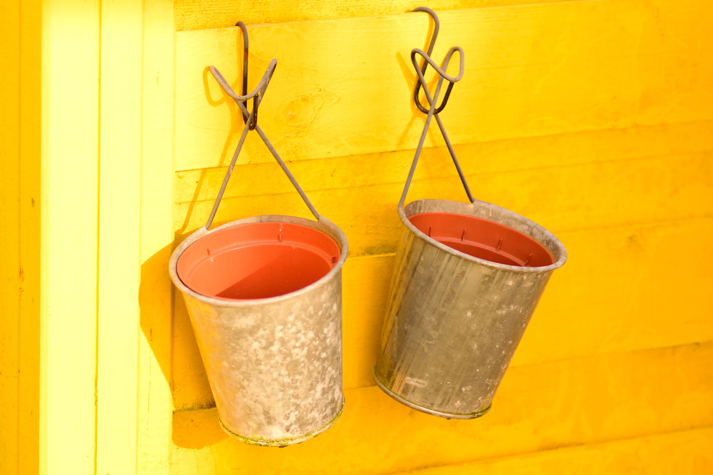

![]()
fs::dir_create("~/Dropbox/Pins")A few days ago I made a huge mistake. I was working on a project that, quite rightly, I’d placed under version control. It lived within a git repository, and that git repository was hosted remotely on GitHub. That’s not the mistake: version control is a good thing. The mistake arrived when the project generated a large output files (about 300Mb in size), and because it’s not a good idea to have large files under version control with git,1 I added that file to .gitignore. Again, not a mistake per se, but you can see the shape of the mistake already: the large file doesn’t exist anywhere except as an untracked file in my local git repo. Bad things can happen in this situation, and lo and behold a few hours later when I messed up something else and unthinkingly called git reset --hard to revert to an earlier state, the file – which took about two hours to generate in the first place – vanished.
Fuuuuuuuuuuck. I’m an idiot.
Okay, that’s not true. I’m not an idiot. But I what I am (or was), is a person who doesn’t have a workflow in place to manage data files that don’t really belong in a git repository, and I paid the price for that huge tiny mistake. Lesson learned.
This is the story of how I learned how to stop worrying and love pins. It’s not a very thorough or detailed post. I’m trying to follow Julia Evans’ advice on blogging and allow myself to tell personal stories, even if those stories are incomplete or imperfect. Not every post needs to be a goddamn monograph.
Storing data with pins
As with everything in data science, mine is a problem that can be solved in many different ways. In this instance I’m working within R, which influences how I think about this. Even within R there are multiple solutions, but I’m lazy and chose to use the pins package for this because I know the developers and it was the first option that came to mind. I don’t really want to write a full tutorial on the pins package because I’m fairly new to it myself, but in case you don’t already know pins, here’s a very quick summary:
A pin is a serialised copy of an R object saved to disk along with accompanying metadata. The most obvious kind of object to store in this way is a data frame, but the general approach is broader. You can choose what format the object is stored in. For general R objects you can write to the native rds format or the qs format. Lists can be saved as json. For rectangular objects like data frames you also have the options of writing to a csv file, a parquet file, or the arrow IPC file format.
Pins live within a board, which refers to the file storage location. This can be a folder on your local machine, or a bucket on a cloud storage provider (AWS, Azure, GCS, etc). When reading or writing a pin, you read or write to the board. Each board is associated with a manifest, a yaml file called
_pins.yamlthat lives in the root directory of the board and lists all the pins stored in the board.
There’s more nuance to pins than this: pins can be versioned and given tags, for instance. But I’m not going to bother with all that here. Instead, I’ll dive straight in and illustrate a very simple workflow using pins that solves about 90% of my problems with almost no effort…

Using pins with Dropbox personal storage
Okay, let’s have a look at ways to solve my problem using pins. I am by nature a lazy person who looks for the easiest solutions to my problems. In particular, I habitually look for solutions that align nicely with my existing setup. In this case, my first thought was to use Dropbox. For many years now I have organised my “personal” files2 on my local machine by keeping my git repos in ~/GitHub and keeping my files that aren’t under version control (but should still be backed up) in ~/Dropbox. Viewed from that perspective, the solution I’m looking for is something where I can keep my git repos in ~/GitHub, but have the large data files stored in ~/Dropbox.
This workflow is very easy to set up with pins. It’s not what I do now (more on that momentarily) but it was the first thing I tried and it works beautifully for personal use. All I have to do is create a Dropbox folder that I’ll use to store my pins (say, ~/Dropbox/Pins), and then create a board in that folder. First, let’s make sure I have the folder:
Now I’ll load the pins package and create a board in that folder.
library(pins)
board_dropbox <- board_folder("~/Dropbox/Pins")
board_dropboxPin board <pins_board_folder>
Path: '~/Dropbox/Pins'
Cache size: 0Let’s suppose I want to pin a copy of the mpg data from the ggplot2 package as a csv file. I’d do that by calling pin_write():
pin_write(
board = board_dropbox,
x = ggplot2::mpg,
name = "mpg",
type = "csv"
)Creating new version '20230613T004154Z-26aa0'
Writing to pin 'mpg'The pin_write() function allows you to supply more information and metadata than this, but – again – I’m not going to bother with all that here. The main thing for my purposes is that pin_write() has indeed written some files to disk:
fs::dir_ls("~/Dropbox/Pins", recurse = TRUE)/home/danielle/Dropbox/Pins/mpg
/home/danielle/Dropbox/Pins/mpg/20230613T004154Z-26aa0
/home/danielle/Dropbox/Pins/mpg/20230613T004154Z-26aa0/data.txt
/home/danielle/Dropbox/Pins/mpg/20230613T004154Z-26aa0/mpg.csvOkay that’s easy enough. The next step is to check if I can read the data back to R. That’s very easy to do with pin_read(). When I pass the board (board_dropbox) and the name of the pin ("mpg") to this function, it returns the data:
pin_read(board_dropbox, "mpg") |> tibble::as_tibble()# A tibble: 234 × 11
manufacturer model displ year cyl trans drv cty hwy fl class
<chr> <chr> <dbl> <int> <int> <chr> <chr> <int> <int> <chr> <chr>
1 audi a4 1.8 1999 4 auto… f 18 29 p comp…
2 audi a4 1.8 1999 4 manu… f 21 29 p comp…
3 audi a4 2 2008 4 manu… f 20 31 p comp…
4 audi a4 2 2008 4 auto… f 21 30 p comp…
5 audi a4 2.8 1999 6 auto… f 16 26 p comp…
6 audi a4 2.8 1999 6 manu… f 18 26 p comp…
7 audi a4 3.1 2008 6 auto… f 18 27 p comp…
8 audi a4 qu… 1.8 1999 4 manu… 4 18 26 p comp…
9 audi a4 qu… 1.8 1999 4 auto… 4 16 25 p comp…
10 audi a4 qu… 2 2008 4 manu… 4 20 28 p comp…
# ℹ 224 more rowsYay!
There’s quite a bit going on under the hood, and I’m glossing over all sorts of details related to metadata, versioning and so on. There’s a reason why pins doesn’t simply dump the csv file into the root folder and call it a day. The extra stuff serves a purpose. But let’s not worry about that for now. What matters is that it works.
Unfortunately, my job is not quite finished. What I haven’t done yet is create a manifest file that summarises the content of the board. Fortunately that’s also easy to do:
write_board_manifest(board_dropbox)Manifest file written to root folder of board, as `_pins.yaml`This creates a _pins.yaml file that contains the relevant summary. The pins package doesn’t automate this part of the process, so you need to call write_board_manifest() every time you modify the pins stored in the board. But that’s pretty easy to do.
All in all, quite painless, and the really nice thing about it is that this dead-simple workflow is perfectly sufficient for my immediate needs. I can now use my ~/Dropbox/Pins folder as the place to keep my big data files without messing up my git workflow at all. The pins package provides a suite of tools that allow me to manipulate pins, but this isn’t the post for that. All I care about right now is convincing myself that yes, this actually will address my immediate concern.
Yay again! Problem solved.
Well, sort of.
Making a huge tiny mistake…
The shortcoming of this approach is that it only works for me. Although my ~/Dropbox/Pins folder is backed up, thereby ensuring I don’t lose my data files, it’s not shared with anyone else. One solution to this would of course be to share the folder. Dropbox supports that, and this would work perfectly well for small-group collaboration. If I’m working with a bunch of people on a project and we need shared copies of a data file, I could share the folder with them and everything would work for them too. But it’s not a great solution to the problem, and it’s not ideal if I want to create a public repository of data files that anyone can access. Yes, you can do that with Dropbox, but it’s not really what the service is supposed to be used for. To my mind, a better approach in that situation is to create a file storage bucket with Amazon AWS S3, or Google Cloud Storage, or whatever. If I then make that bucket publicly readable, anyone can access my pins. That seems like a much better plan to me.
Unfortunately, it’s at this point I made a tiiiiiny mistake. I decided to use Google Cloud Storage to host my buckets because that’s the cloud provider I’m most familiar with… but unbeknownst to me at the time it turns out that support for GCS buckets in the pins package is a work in progress. It mostly works but there’s a few features still missing, and I had to resort to a truly awful hack in order to get what I wanted.
But I’m getting ahead of myself. Let’s start out by creating the buckets and see what happens…

Creating and configuring the storage buckets
Over the years I’ve done quite a bit of work using Google Cloud Platform. Small scale stuff, generally, but nevertheless I’ve had enough experience with it that I’m fairly comfortable with the gcloud command line tool. So naturally, the first thing I did was create my buckets from the terminal.3 This isn’t supposed to be a gcloud tutorial, but in case you’re interested there’s some relevant documentation that explains what I did. Everything in google cloud takes place within a project, specified by project ID (in this case pins-389407). For my own purposes I have two buckets in my pins project: djnavarro-pins is where I store publicly accessible data, and djnavarro-private-pins is where I keep private pins. Rather than set defaults, I have a tendency to do everything explicitly, so the --project flag is set in each command, as is the --location flag used to specify that I want my data to be stored in Sydney (also known as australia-southeast1). Anyway, here’s the command to create the bucket:
gcloud storage buckets create gs://djnavarro-pins/ \
--project pins-389407 \
--location australia-southeast1 \
--uniform-bucket-level-accessThe --uniform-bucket-level-access flag is used to indicate that I’m not doing fancy file-specific access control. I’m too lazy or simple-minded for that: I want one bucket to be public, and another bucket to be private. By default the buckets are private, and to make all files in the bucket publicly readable (relevant documentation) the command I want is this:
gcloud storage buckets add-iam-policy-binding gs://djnavarro-pins/ \
--member=allUsers \
--role=roles/storage.objectViewerCool. Now I have a machine gun. Um, sorry. Now I have a public GCS bucket. Yes. That’s what I meant. Let’s use it to store my pins.
Writing pins to a board on Google Cloud Storage
For the moment I’m going to look at this solely from my perspective: as the owner of this public bucket, how can I use it to store pins? I’m not going to concern myself with how other people can access it right now. I’ll get to that at the end of the post.
Let’s say I want to pin the diamonds data from the ggplot2 package as a csv file. In order to write anything to my bucket, I need to authenticate with google. I find this step clunky but doable. The first thing I need to do is obtain an authentication token, which I can obtain with the help of the gargle package:
library(gargle)
scope <- "https://www.googleapis.com/auth/cloud-platform"
token <- token_fetch(scopes = scope)This workflow is designed for interactive use so there’s a confirmation process to follow. Once that’s done I can authenticate with the googleCloudStorageR package by passing the token to the gcs_auth() function. Once that’s done I can list the contents of my bucket with gcs_list_objects():
library(googleCloudStorageR)
gcs_auth(token = token)
gcs_list_objects(bucket = "gs://djnavarro-pins") name size updated
1 _pins.yaml 161 bytes 2023-06-12 07:33:04
2 warfpk_data/20230610T142554Z-b8888/data.txt 190 bytes 2023-06-10 14:26:11
3 warfpk_data/20230610T142554Z-b8888/warfpk_data.csv 8 Kb 2023-06-10 14:26:11
4 warfpk_draws/20230610T142202Z-5bd80/data.txt 200 bytes 2023-06-10 14:23:05
5 warfpk_draws/20230610T142202Z-5bd80/warfpk_draws.csv 281.4 Mb 2023-06-10 14:25:26
6 warfpk_summary/20230610T083635Z-340c1/data.txt 200 bytes 2023-06-10 08:38:44
7 warfpk_summary/20230610T083635Z-340c1/warfpk_summary.csv 1.2 Mb 2023-06-10 08:38:44As you can see from this file listing, there are already a few pins stored in this bucket. That’s because I’d been using it in my previous post, which was indeed the project in which I’d made my huge mistake.
The googleCloudStorageR package has quite a bit of functionality built into it, and I can read and write whatever I want to the bucket using this interface. However, what I really want to do is abstract over the low level processes using the pins package. So, very similar to what I did with my local dropbox folder, I’ll use the board_gcs() function to treat the gs://djnavarro-pins bucket as a board:
library(pins)
board <- board_gcs("gs://djnavarro-pins")Because I’ve authenticated and because I have write access to the bucket, I can write my pins directly to the board using pin_write(). The command for a board stored as a GCS bucket is essentially identical to the command I used with my local folder earlier:
pin_write(
board,
ggplot2::diamonds,
name = "diamonds",
type = "csv"
)Under the hood the work is done by googleCloudStorageR, and when I run this command it whines a little about needing predefinedAcl = "bucketLevel", but it’s smart enough to get the job done anyway. In principle what I should be doing to prevent the warning messages is pass this argument to pin_write() via the dots, but unfortunately pin_write() appears to be a bit trigger happy and it throws an error if I do that. As far as I can tell what’s happening is that pins is incorrectly guessing that the argument is misspelled, so for the time being I’ll just have to live with googleCloudStorageR grumbling at me.
What really matters here is that it works. We can verify that the files have been written as follows:
gcs_list_objects(bucket = "gs://djnavarro-pins") name size updated
1 _pins.yaml 161 bytes 2023-06-12 07:33:04
2 diamonds/20230612T073405Z-c9e9b/data.txt 189 bytes 2023-06-12 07:34:05
3 diamonds/20230612T073405Z-c9e9b/diamonds.csv 2.6 Mb 2023-06-12 07:34:14
4 warfpk_data/20230610T142554Z-b8888/data.txt 190 bytes 2023-06-10 14:26:11
5 warfpk_data/20230610T142554Z-b8888/warfpk_data.csv 8 Kb 2023-06-10 14:26:11
6 warfpk_draws/20230610T142202Z-5bd80/data.txt 200 bytes 2023-06-10 14:23:05
7 warfpk_draws/20230610T142202Z-5bd80/warfpk_draws.csv 281.4 Mb 2023-06-10 14:25:26
8 warfpk_summary/20230610T083635Z-340c1/data.txt 200 bytes 2023-06-10 08:38:44
9 warfpk_summary/20230610T083635Z-340c1/warfpk_summary.csv 1.2 Mb 2023-06-10 08:38:44Brilliant! It does work! The files for the diamonds pin have been written. Everything is fine. Except… it isn’t. Notice that the _pins.yaml manifest file is still 161 bytes in size. It hasn’t been update to add an entry for the diamonds data, which we can confirm by downloading the file directly using googleCloudStorageR::gcs_get_object():
gcs_get_object("gs://djnavarro-pins/_pins.yaml") |>
yaml::as.yaml() |>
cat()✔ Downloaded and parsed _pins.yaml into R object of class: character
|
warfpk_data:
- warfpk_data/20230610T142554Z-b8888/
warfpk_draws:
- warfpk_draws/20230610T142202Z-5bd80/
warfpk_summary:
- warfpk_summary/20230610T083635Z-340c1/Okay, fair enough. That’s not at all surprising, because I haven’t called write_board_manifest() to update the manifest file yet. Unfortunately, this is the moment at which I had to resort to a terrible horrible no good very bad hack.4
This is the “needles” part of my “pins and needles” story.
The terrible horrible no good very bad hack
There’s a bit of a painful thing that follows because pins doesn’t currently have working pin_list() method for google cloud storage. This in turn means that I can’t currently use write_board_manifest() to write a manifest file for my board, because it relies on the pin_list() function to do part of the work. That’s a huge pain. A little browsing on github reassures me that the developers are well aware of the problem, and addressing this is indeed on the to-do list. Awesome. I’m a patient person, and happy to wait for it to be addressed. Unfortunately patience doesn’t solve my problem in the here-and-now, so while I’m waiting I decided to put together some helper functions that are good enough for my immediate needs. This pin_list_gcs() function returns a character vector with the names of my stored pins:
pin_list_gcs <- function(board, ...) {
googleCloudStorageR::gcs_list_objects(bucket = board$bucket)$name |>
grep(pattern = "/", x = _, value = TRUE) |>
gsub(pattern = "/.*", replacement = "", x = _) |>
unique()
}Now a little bit of evil, in which I do the thing you should never ever do. I’m going to mess with the internals of the pins package and overwrite its internal pins_list.pins_board_gcs() function.
unlockBinding(as.symbol("pin_list.pins_board_gcs"), getNamespace("pins"))
assignInNamespace("pin_list.pins_board_gcs", pin_list_gcs, "pins")I am a terrible person.
But you knew that already, so let’s move on.
My next step is to write an S3 method that allows me to write a manifest file for my :
write_board_manifest_yaml.pins_board_gcs <- function(board, manifest, ...) {
temp_file <- withr::local_tempfile()
yaml::write_yaml(manifest, file = temp_file)
googleCloudStorageR::gcs_upload(
file = temp_file,
bucket = board$bucket,
type = "text/yaml",
name = "_pins.yaml"
)
}Now this works:
write_board_manifest_yaml(board, manifest = pins:::make_manifest(board))We can verify that we’ve written the updated file. For reasons that escape me, this won’t work unless you start a new session and re-authenticate in the process5. If you don’t do that you’ll just get the old version of the manifest file. I have no idea why. Anyway here’s the result:
gcs_get_object("gs://djnavarro-pins/_pins.yaml") |>
yaml::as.yaml() |>
cat()✔ Downloaded and parsed _pins.yaml into R object of class: character
|
diamonds:
- diamonds/20230612T071111Z-c9e9b/
warfpk_data:
- warfpk_data/20230610T142554Z-b8888/
warfpk_draws:
- warfpk_draws/20230610T142202Z-5bd80/
warfpk_summary:
- warfpk_summary/20230610T083635Z-340c1/Similarly, if we now list the contents of the bucket we can see that it’s all been updated:
gcs_list_objects(bucket = "gs://djnavarro-pins") name size updated
1 _pins.yaml 206 bytes 2023-06-12 07:39:53
2 diamonds/20230612T073405Z-c9e9b/data.txt 189 bytes 2023-06-12 07:34:05
3 diamonds/20230612T073405Z-c9e9b/diamonds.csv 2.6 Mb 2023-06-12 07:34:14
4 warfpk_data/20230610T142554Z-b8888/data.txt 190 bytes 2023-06-10 14:26:11
5 warfpk_data/20230610T142554Z-b8888/warfpk_data.csv 8 Kb 2023-06-10 14:26:11
6 warfpk_draws/20230610T142202Z-5bd80/data.txt 200 bytes 2023-06-10 14:23:05
7 warfpk_draws/20230610T142202Z-5bd80/warfpk_draws.csv 281.4 Mb 2023-06-10 14:25:26
8 warfpk_summary/20230610T083635Z-340c1/data.txt 200 bytes 2023-06-10 08:38:44
9 warfpk_summary/20230610T083635Z-340c1/warfpk_summary.csv 1.2 Mb 2023-06-10 08:38:44Yup, it works. But I’m under no illusions. This is not a good workflow. Messing around with the internals of someone else’s package is… bad. Very bad. I do not recommend anyone do this. This is purely a temporary fix I’m adopting for the time being while GCS support in pins is incomplete.
Okay, whatever. Let’s move on, shall we? Ugly hack notwithstanding, I now have a workflow that allows me to use a public GCS bucket to store my pins. It’s good enough for now, so I’ll now take a look at how other people can read pins from this bucket.
The read-only workflow
The nice thing about cloud storage services like AWS S3 and GCS is that they provide public, human readable URLs for shared files. My djnavarro-pins bucket, for instance, is publicly available at https://storage.googleapis.com/djnavarro-pins/. Any R users who wants to use one of my pins can do so using the pins::board_url() function. We can create a read-only board by passing it the path to the manifest file, like this:
read_only_board <- board_url(
"https://storage.googleapis.com/djnavarro-pins/_pins.yaml"
)Since this other person isn’t me and doesn’t know what pins are stored here, they might want to use the pin_search() function to get a listing of all the pins, like this:
pin_search(read_only_board)# A tibble: 4 × 6
name type title created file_size meta
<chr> <chr> <chr> <dttm> <fs::byt> <list>
1 diamonds csv diamonds: a… 2023-06-12 17:34:05 2.64M <pins_met>
2 warfpk_data csv warfpk_data… 2023-06-11 00:25:54 8.01K <pins_met>
3 warfpk_draws csv warfpk_draw… 2023-06-11 00:22:02 281.39M <pins_met>
4 warfpk_summary csv warfpk_summ… 2023-06-10 18:36:35 1.15M <pins_met>Cool. Now that we know what pins are available, we can read the data stored in the “diamonds” pin directly into R by calling pin_read():
pin_read(read_only_board, "diamonds") |>
tibble::as_tibble()# A tibble: 53,940 × 10
carat cut color clarity depth table price x y z
<dbl> <chr> <chr> <chr> <dbl> <dbl> <int> <dbl> <dbl> <dbl>
1 0.23 Ideal E SI2 61.5 55 326 3.95 3.98 2.43
2 0.21 Premium E SI1 59.8 61 326 3.89 3.84 2.31
3 0.23 Good E VS1 56.9 65 327 4.05 4.07 2.31
4 0.29 Premium I VS2 62.4 58 334 4.2 4.23 2.63
5 0.31 Good J SI2 63.3 58 335 4.34 4.35 2.75
6 0.24 Very Good J VVS2 62.8 57 336 3.94 3.96 2.48
7 0.24 Very Good I VVS1 62.3 57 336 3.95 3.98 2.47
8 0.26 Very Good H SI1 61.9 55 337 4.07 4.11 2.53
9 0.22 Fair E VS2 65.1 61 337 3.87 3.78 2.49
10 0.23 Very Good H VS1 59.4 61 338 4 4.05 2.39
# ℹ 53,930 more rowsA nice thing about using pin_read() rather than downloading the file directly is that the pins package automatically creates a local cache of previously-downloaded pins. You don’t have to download the same file over and over when re-running your code. I’m not going to go into those details here, but I will mention that it also provides functions that let you manage this cache without much difficulty. From this perspective, everything “just works”. It’s really quite nice.
Epilogue
On the whole I’m very happy with pins. It solves a real problem I have, and the interface is nice. I’ll probably use it for other things in the future. The specific issue I ran into with GCS boards is an annoyance, but one that I’m pretty certain will vanish as GCS support in pins matures. No big deal.
That being said, because I am very uncomfortable with the fact that I’ve published my terrible horrible no good very bad hack to the internet, I will say it again… as a general long-term strategy, my workflow is terrible and I have no intention whatsoever of relying on it. Nobody else should rely on my terrible horrible no good very bad hack. I implemented it as a hotfix, nothing else. Under no circumstances is it wise to rely on a method that fucks around with the internals of a package.
Anyways… that’s about all I had to say really.
Footnotes
Indeed, GitHub won’t let you push a file that large to the remote repository unless you use large file storage, which is not a thing I want to do.↩︎
In this case what I really mean by “personal” isn’t that the files are sensitive in any way, just that I’m not trying to share them with anyone else. My workflow is designed to allow me to reproduce anything I’ve done in the past if my laptop mysteriously catches fire. At this point I’m not at all concerned about whether anyone else can reproduce it.↩︎
As a disclaimer: I am not a fan of so-called “command line bullshittery”. There’s nothing special about working from the command line, and I feel obliged to point out that you don’t actually need to use the gcloud CLI to do any of this. The google cloud console lets you do the exact same thing with a GUI. No big deal. If that approach feels easier to you, go for it!↩︎
Some hacks are like that. Even in Australia.↩︎
Actually, it does still work even without re-authentication if you explicitly specify the
generationargument togcs_get_object()but whatever.↩︎
Reuse
Citation
BibTeX citation:
@online{navarro2023,
author = {Navarro, Danielle},
title = {Pins and Needles},
date = {2023-06-12},
url = {https://blog.djnavarro.net/posts/2023-06-12_pins-and-needles},
langid = {en}
}
For attribution, please cite this work as: